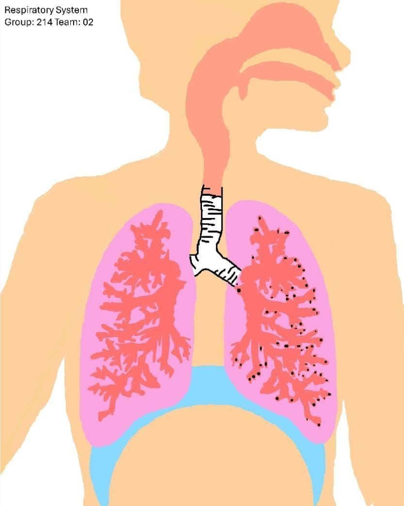

As we previously mentioned, we designed a route for a robot capable of repairing one of the organs vital for life: "the lung", to achieve this process our robot will be introduced through one of the nasal cavity to later enter the pharynx, then in the trachea and finally in the bronchioles in order to repair any irregular damage in one of the lungs, this will serve to prevent greater damage thanks to some lung disease such as pulmonary emphysema or some type of obstruction.
Our robot will have a design similar to that of an octopus with tentacles to facilitate its grip on the inner layer of the various parts of the respiratory system (nasal cavity, pharynx, trachea, bronchi/bronchioles) through which it will pass and at the same time it will have a camera with transmitter to see in real time from the outside on a large screen the path that the robot is taking and if what it is doing is the correct path, so as to be able to manipulate it with a control in case something gets out of control, such as if it goes off course or starts causing damage within the system, although clearly hoping that doesn't happen.